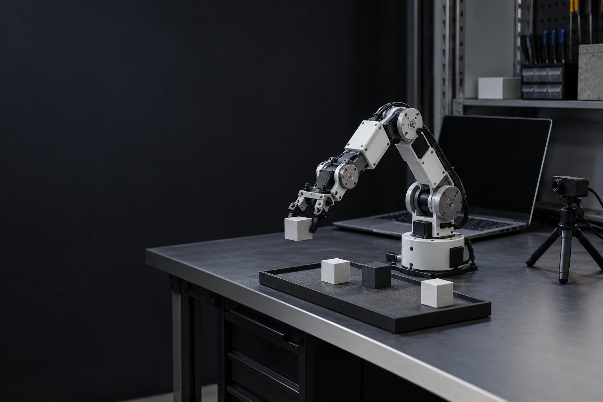
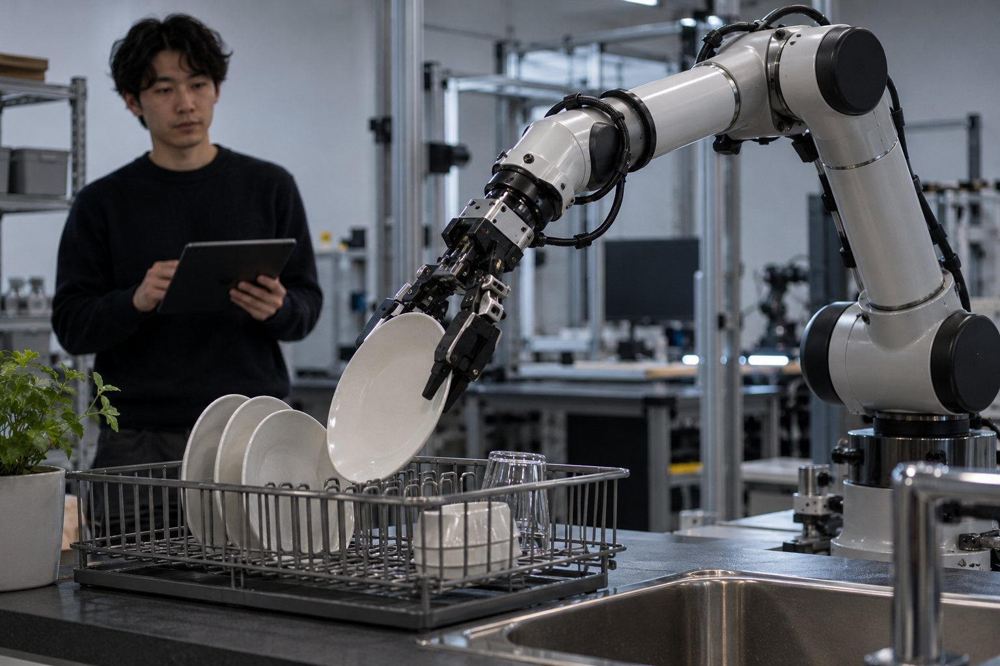

Curso · 8 clases · robótica con IA
VLA: robots que ven, entienden y actúan
Cómo un modelo mira una cámara, lee una frase y devuelve movimientos de brazo. En ocho clases entiendes la arquitectura, eliges un modelo por su licencia, abres datos reales de robot, entrenas y evalúas una política con LeRobot y armas el checklist para llevar al mundo real. No necesitas tener un robot.

- 8clases
- 130minutos de clase
- 23ejercicios con "listo cuando"
- 0.6.1versión de LeRobot probada (19/10/2026)
Las clases
Del concepto al banco de trabajo: qué es un VLA, cómo funciona por dentro, qué modelos existen en oct/2026, datos, entrenamiento, simulación, la frontera de la investigación y el camino hasta el mundo real.
 Clase 1 · 14 minDe LLM a robot que actúaUn chatbot devuelve texto. Un robot necesita devolver movimiento, decenas de veces por segundo, mirando una cámara. Esta lección separa las cuatro familias de modelos que vas a escuchar en el curso y muestra qué cambió entre 2023 y octubre de 2026.
Clase 1 · 14 minDe LLM a robot que actúaUn chatbot devuelve texto. Un robot necesita devolver movimiento, decenas de veces por segundo, mirando una cámara. Esta lección separa las cuatro familias de modelos que vas a escuchar en el curso y muestra qué cambió entre 2023 y octubre de 2026. Clase 2 · 16 minOjo, cerebro y mano: por dentro de un VLATodo VLA tiene tres partes: una que ve, una que entiende y una que convierte la decisión en movimiento. La parte del movimiento es donde más se diferencian los modelos, y donde el reloj aprieta: el brazo espera un comando cada pocos milisegundos.
Clase 2 · 16 minOjo, cerebro y mano: por dentro de un VLATodo VLA tiene tres partes: una que ve, una que entiende y una que convierte la decisión en movimiento. La parte del movimiento es donde más se diferencian los modelos, y donde el reloj aprieta: el brazo espera un comando cada pocos milisegundos. Clase 3 · 16 minEl mapa de los modelos en 2026Hay decenas de VLA y el mejor del gráfico puede ser el que no puedes usar. Antes del tamaño y del número de benchmark, tres preguntas deciden: si los pesos se pueden descargar, si la licencia te deja usarlo en tu caso y si el acceso es libre, de pago o solo para socios.
Clase 3 · 16 minEl mapa de los modelos en 2026Hay decenas de VLA y el mejor del gráfico puede ser el que no puedes usar. Antes del tamaño y del número de benchmark, tres preguntas deciden: si los pesos se pueden descargar, si la licencia te deja usarlo en tu caso y si el acceso es libre, de pago o solo para socios. Clase 4 · 16 minDatos: el combustible que faltaTexto para entrenar un LLM hay de sobra en internet. Datos de robot, no: alguien tiene que mover el brazo, grabar la cámara y anotar la tarea. En 2026 la respuesta pasó a ser video de personas trabajando, filmado en primera persona. En esta clase abres un dataset de robot de verdad.
Clase 4 · 16 minDatos: el combustible que faltaTexto para entrenar un LLM hay de sobra en internet. Datos de robot, no: alguien tiene que mover el brazo, grabar la cámara y anotar la tarea. En 2026 la respuesta pasó a ser video de personas trabajando, filmado en primera persona. En esta clase abres un dataset de robot de verdad. Clase 5 · 18 minManos a la obra con LeRobot 0.6LeRobot, de Hugging Face, reúne en un solo lugar los datos, las políticas y los comandos para grabar, entrenar y ejecutar. En esta clase entrenas una política ACT de verdad, en pocos pasos, y terminas con un checkpoint en el disco. Sin robot y sin cuenta.
Clase 5 · 18 minManos a la obra con LeRobot 0.6LeRobot, de Hugging Face, reúne en un solo lugar los datos, las políticas y los comandos para grabar, entrenar y ejecutar. En esta clase entrenas una política ACT de verdad, en pocos pasos, y terminas con un checkpoint en el disco. Sin robot y sin cuenta. Clase 6 · 16 minSimular antes de romper: sim, evaluación y sim-to-realProbar en el robot real cuesta tiempo, piezas y paciencia. El simulador te deja equivocarte mil veces gratis y te da un número: la tasa de éxito. Pero el número solo vale si la prueba es lo bastante difícil y si el mundo simulado se parece al real.
Clase 6 · 16 minSimular antes de romper: sim, evaluación y sim-to-realProbar en el robot real cuesta tiempo, piezas y paciencia. El simulador te deja equivocarte mil veces gratis y te da un número: la tasa de éxito. Pero el número solo vale si la prueba es lo bastante difícil y si el mundo simulado se parece al real.
Clase 7 · 16 minMás allá de la imitación: RL, world models y memoriaImitar tiene un techo: la política solo aprende lo que la persona mostró y no sabe salir de un error que nunca vio. En 2026 tres ideas empujan ese techo: aprender de la propia experiencia (RL), predecir el futuro en video (World Action Models) y recordar lo que ya hizo (memoria). Clase 8 · 18 minDel laboratorio al mundo realUna política que acierta en el simulador todavía está lejos de una línea de producción. En el camino están ROS 2, que conecta el modelo con los motores, las capas de seguridad, que ningún VLA dispensa, y el estado real del mercado, que está menos listo de lo que sugieren los titulares.
Clase 8 · 18 minDel laboratorio al mundo realUna política que acierta en el simulador todavía está lejos de una línea de producción. En el camino están ROS 2, que conecta el modelo con los motores, las capas de seguridad, que ningún VLA dispensa, y el estado real del mercado, que está menos listo de lo que sugieren los titulares.
Para quién es
- 1Para quien programa un poco en Python y quiere entender la robótica con IA sin memorizar siglas.
- 2Para quien no tiene robot: las prácticas corren con datos del Hugging Face Hub y en simulación. El brazo SO-101 es opcional.
- 3Para quien necesita decidir si un modelo sirve para un caso real y quiere revisar antes la licencia, el acceso y la seguridad.
Qué sabrás hacer al terminar
- 1Decir si un sistema es LLM, VLM, VLA o World Action Model y por qué.
- 2Elegir un modelo por su licencia, su tamaño y su tipo de acceso.
- 3Abrir un dataset de robot, entrenar una política corta y medir su tasa de éxito en simulación.
- 4Armar el checklist de seguridad y tu plan de estudio con fechas.